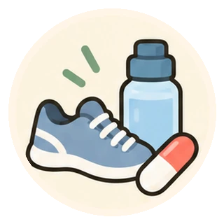

気になることから、できることへ
スポーツと薬・サプリ
競技をする人ほど、薬やサプリの中身を確認しよう。
まず知ってほしいこと
治療のための薬でも競技のルールに関わる場合がある。サプリメントには意図しない成分混入のリスクもある。
気づく
こんなことが気になっていない？
- 大会に出場する予定がある
- 薬を使っている
- 体づくりのためにサプリを勧められた
選ぶ・やってみる
できそうなことを一つ選ぼう
- 競技団体のルールを確認する
- 薬剤師やスポーツファーマシストに薬の成分と使用方法を相談する
- サプリに過度な期待をせず食事と休養を基本にする
自分に合う方法は一人ひとり違う。無理なくできることから始めよう。
困ったとき・気をつけたいこと
必要な治療を自己判断で中止しない。禁止物質や使用可否は競技・時期等で変わるため、最新の公式情報を確認する。
一人で判断しにくいことは、家族・学校の先生・医療者など、信頼できる人に相談してよい。
もっと詳しく知りたいとき
リンク先はミライラボ外の関連サイト。ここでは一般的な情報を紹介しており、個別の診断や治療の代わりにはならない。最終更新：2026年10月18日。